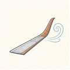
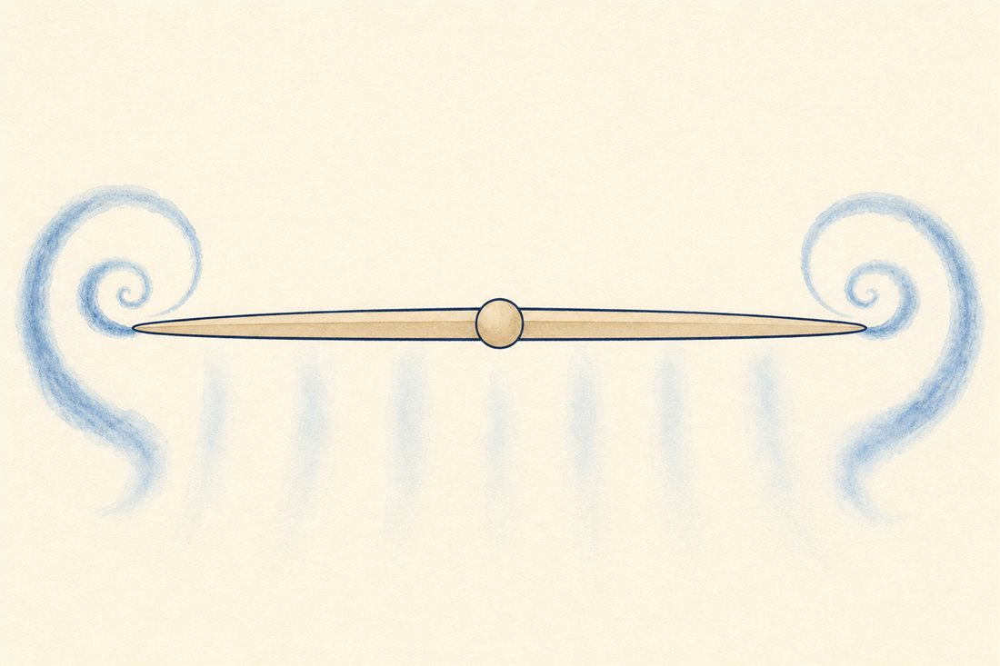
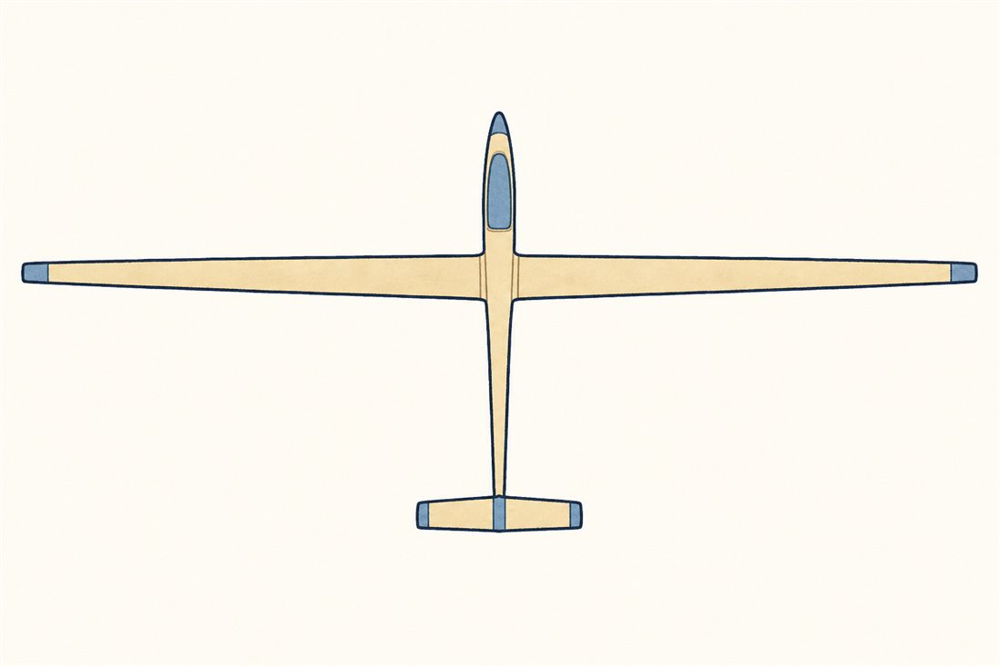
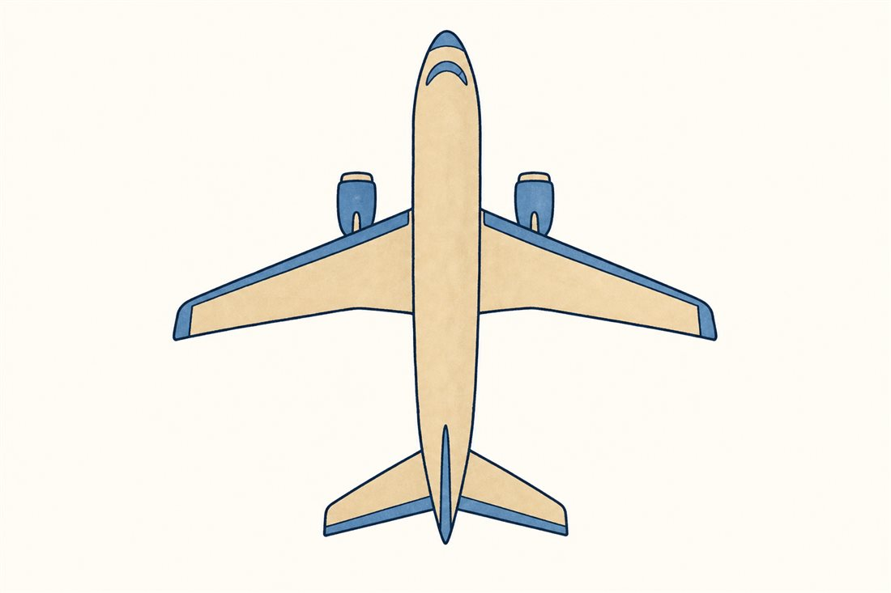
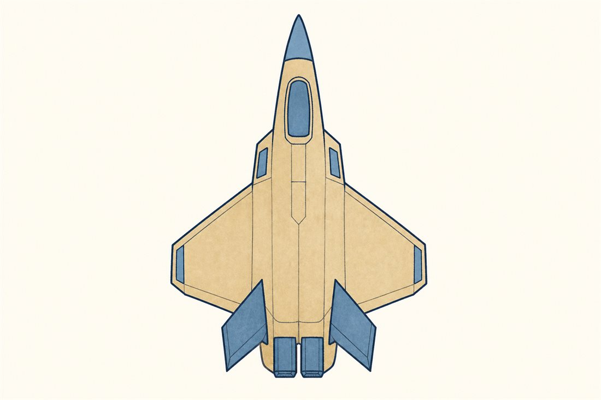

第2巻 だい2わ ── 渦の章つばさの かたち
前話の終わりに、翼を通った空気は下向きの勢いをもらって去っていきました。でも、実物の翼には「端」があります。下面の高圧の空気は、端まで来ると我慢できずに上面の低圧側へ回り込む。この回り込みが後ろへ流されながら巻き上がって、翼の両端から翼端渦という空気の竜巻が伸びるのです。
この渦、ただの模様ではありません。揚力の請求書です。渦を回し続けるエネルギーは機体が払っています。しかも渦は翼のまわりの空気をよけいに押し下げるので、翼は「少し下向きの風の中」で働くことになり、揚力の向きがわずかに後ろへ傾く——これが誘導抗力。浮くことそのものに付いてくる税金です。

では、この税金を安くするには？ 式は「よりみち」に譲って結論だけ——同じ揚力・同じ翼面積なら、スパンを伸ばして細長くする（アスペクト比を上げる）ほど誘導抗力は減ります。翼の細長さは、その機体が渦の税金とどう付き合うことにしたかの表明です。切り替えてみてください。



よりみち税金の式と、ウィングレット
誘導抗力係数は揚力係数の2乗に比例し、アスペクト比ARに反比例します。CL²が効くので、ゆっくり飛ぶ（＝CLが大きい）ほど税金は急に重くなる——重くて遅いとき、つまり離着陸のころほど渦は強く、空港で大型機の後ろの着陸間隔をわざわざ空ける（後方乱気流管制）のはこのためです。そして翼端の小さな折り返し——ウィングレット。ただの衝立ではなく、翼端に立てた小さな揚力面で、渦の巻き込み流から前向きの力の成分を回収しつつ、荷重分布を端へ延ばして実効スパンを稼ぐ装置です。稼ぎは巡航燃費の数%ですが、その数%のために世界中の翼の端が折れ曲がりました。
よりみち渦に乗る鳥、渦をよける飛行機
図の「外側は上昇流」を思い出してください。翼端渦の外側では空気が持ち上がります。渡り鳥のV字編隊は、前の鳥の翼端が作るこの上昇流に翼を載せて飛ぶ省エネ術——鳥たちは揚力線理論を体で知っています。いっぽう人間の飛行機にとって、先行機の残した渦は数分間も空に残る見えない乱気流。だから管制は機体の重さで後続の間隔を変えます。ページ末尾の写真は、まさにこの後方乱気流を研究するためにNASAが煙で渦を可視化した1枚です。
 流体屋のためのノート
流体屋のためのノート
枠組みは揚力線理論です。翼をスパン方向の循環分布Γ(y)で置き換えると、循環のスパン方向変化ぶんが後流渦シートとして放出される——ヘルムホルツの渦定理の帰結で、翼端渦はこのシートが巻き上がった姿です。「発生してしまう」ものではなく、循環の保存が翼の後ろに書く必然です。楕円循環分布のとき吹きおろしはスパン一様になり誘導抗力最小（スパン効率e=1）、その会計が CDi=CL²/(πeAR)。実務では、3次元CFDの抗力予測は遠方境界の扱いとスパン方向解像度に敏感で、圧力積分と後流面の運動量欠損積分の突き合わせ（第1巻からの「会計」問題の続き）が精度の見張り番になります。次話は翼を機体に取り付けます——釣り合いとモーメントの世界へ。
{kind=link}
・J. D. Anderson, Fundamentals of Aerodynamics, 6th ed., ch.5（有限翼・揚力線理論）
・NASA Langley, Wake Vortex Study（写真・パブリックドメイン）
・アスペクト比の数値: Wikipedia "eta (glider)"（AR 51.33）・"Boeing 787 Dreamliner"（約9.6）